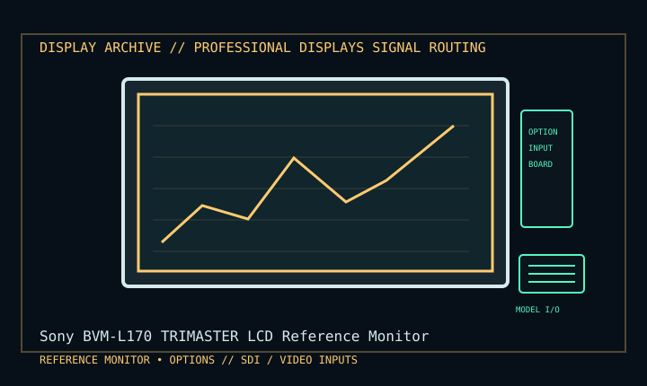

[ INDIVIDUAL COMPONENT // DISPLAY ARCHIVE ]
Sony BVM-L170 TRIMASTER LCD Reference Monitor
17-inch broadcast/post-production LCD reference monitor.

IDENTIFICATION: Match the exact model suffix, region and installed option boards to the cited manual and rear label. Do not infer electrical compatibility from connector shape.
Model-specific specifications
| Catalog class | Professional Displays |
|---|---|
| Exact product | Sony BVM-L170 TRIMASTER LCD Reference Monitor |
| Era / purpose | 17-inch broadcast/post-production LCD reference monitor. |
| Panel / image | 17-inch TRIMASTER LCD, native 1280 × 1024 panel; accepts HD image formats including 1920 × 1080 and maps/scales to native pixels. |
| Input architecture | Modular input boards/assemblies; SDI, analog video/RGB and DVI options depend on installed boards. Inspect rear option slots and identify board part numbers. |
| Power / installation | AC and 24 V DC operation are specified for field use; exact power draw and connector requirements depend on installed module/configuration. Use official model manual and label. |
| Calibration / mechanics | Broadcast reference monitor with markers, aspect controls, multi-image and calibration functions; rack installation/stand configuration varies by kit. |
Revision, timing & host compatibility
Do not confuse the accepted 1920 × 1080 signal with 1920 × 1080 native pixel count; this model’s panel is 1280 × 1024. Input compatibility is board-dependent: verify installed option hardware, signal format, sync and firmware before connection. Use regulated, correctly wired 24 V DC only if manual/label permits.
Before operation, compare source signal type, scan/frame timing, pinout, interface bandwidth, input-board configuration and mains/DC rating against the model-specific manual and nameplate. A listed maximum mode is not a promise of optimum image quality.
Vintage preservation & repair notes
Capture option-board inventory, firmware, calibration/white-balance data, hours and rack hardware before moving. Test each installed interface, markers and internal fans. Professional calibration and board repair require Sony service documents and trained broadcast technicians.
Record serial/date code, configuration, all installed interface boards, accessories, image condition, calibration state, test source and document edition. Disconnect power before external cleaning and use only the manufacturer-approved procedure; do not open CRT/LCD/OLED equipment without qualified service practice.
Manufacturer manuals & specifications
- Sony BVM-L170 Operation ManualManufacturer operating manual scan for exact panel, accepted signals and optional input architecture.
- Sony BVM-L170 Manuals & SpecificationsSony model-specific documentation archive.